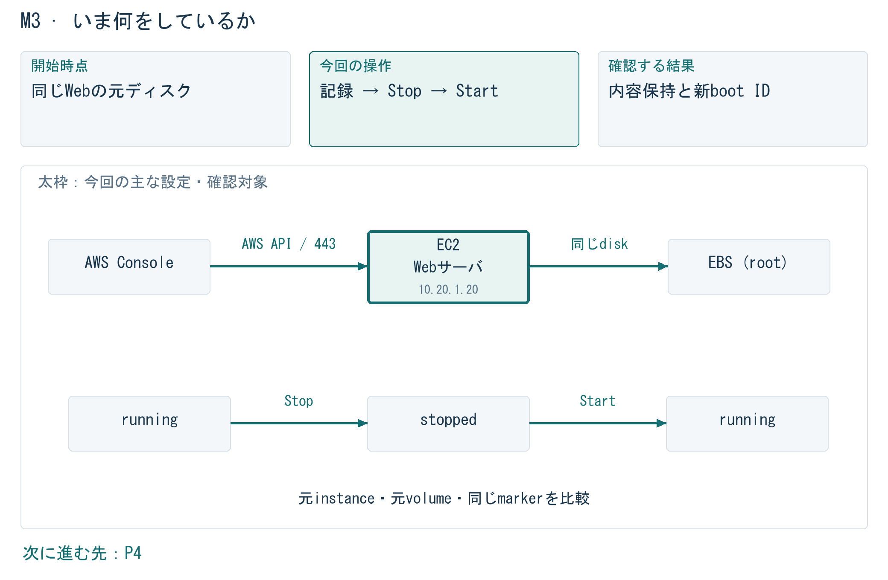

M3 保存内容と停止・再開 (3)
はじめに：接続・操作の約束 · 練習 P0〜P6 · 課題 M0〜M6 · ブラウザで確認する
2026-11-03 · D12 P/M r1.4
配布版の有効期限：2027年1月31日末（UZT）。
始める前に
共通の接続・操作を確認する。対応する詳しい練習はP3。課題の判定方法はブラウザ確認手順を使う。
完成要件
M専用markerを自分のLab IDで作る。P3とは別のブラウザで停止前記録→AWS Stop→ブラウザで停止完了確認→AWS Start→ブラウザで再開後確認を行う。対象は同じWebと元root volume。単なるrebootでは不可。backup/restoreとdisk追加は不要。
今回の見取り図

図の太枠が今回の主な対象です。設定操作は各手順の実行場所で行い、図の矢印は接続・確認の向きを表します。 SGの通信許可は初期配備済みで、今回の課題はサーバー内の設定です。 Stop/StartはAWS APIによる管理操作で、Webの受信443番を開く操作ではありません。 図を参考に完成要件から設定値を自分で決めます。


- File: /var/lib/jdu-web/mission/storage.txt
lab_id={lab_id}
task=M3
payload=mission-storage-2026
本文の{lab_id}は自分の匿名Lab IDに置き換える。file0644/root:root、親directory0755/root:root。停止はWebのみ、同じ元instance/volumeで行う。
合格条件：採点check各1素点
| check ID（変更しない） | 満たすこと |
|---|---|
| WEB04_MARKER_CONTENT | 学生が作ったP/M別markerのpath・匿名Lab ID・task・本文が一致する。 |
| WEB04_MARKER_PERMISSIONS | markerはroot:root/0644、親directoryは0755である。 |
| WEB04_STOP_START_RETENTION | 同じ配備の停止前/停止状態/再開後の証跡で、元instance/volumeとmarker hashが同じ、boot IDが変化したことを確認。単なるrebootや旧fixture記録では代用しない。 |
本人確認・管理・配布元・通信基盤・依存前提等の準備checkは上表の素点に加えない。必要前提が未完了なら、点が一部あっても次段階の準備完了ではない。
確認・提出
- PCのWeb Portalへ学校Googleでログインし、本人のLabと M3 を選ぶ。初回の連携・画面の説明はブラウザ確認手順を参照する。
- 「停止前の状態を記録する」→保存成功→AWSで同じWebをStop→stopped→「停止完了を確認する」→記録成功→AWSで同じWebをStart→running/SSM Online→「再開後の保持を確認する」の順で進める。P3とは別にM3を記録する。
- 処理中は「結果を更新する」で完了を待ち、課題ID・時刻・各check・保存状態を読む。結果は自動保存され、Mの成績は「保存済み成績を見る」で確認できる。PとM0は成績外。